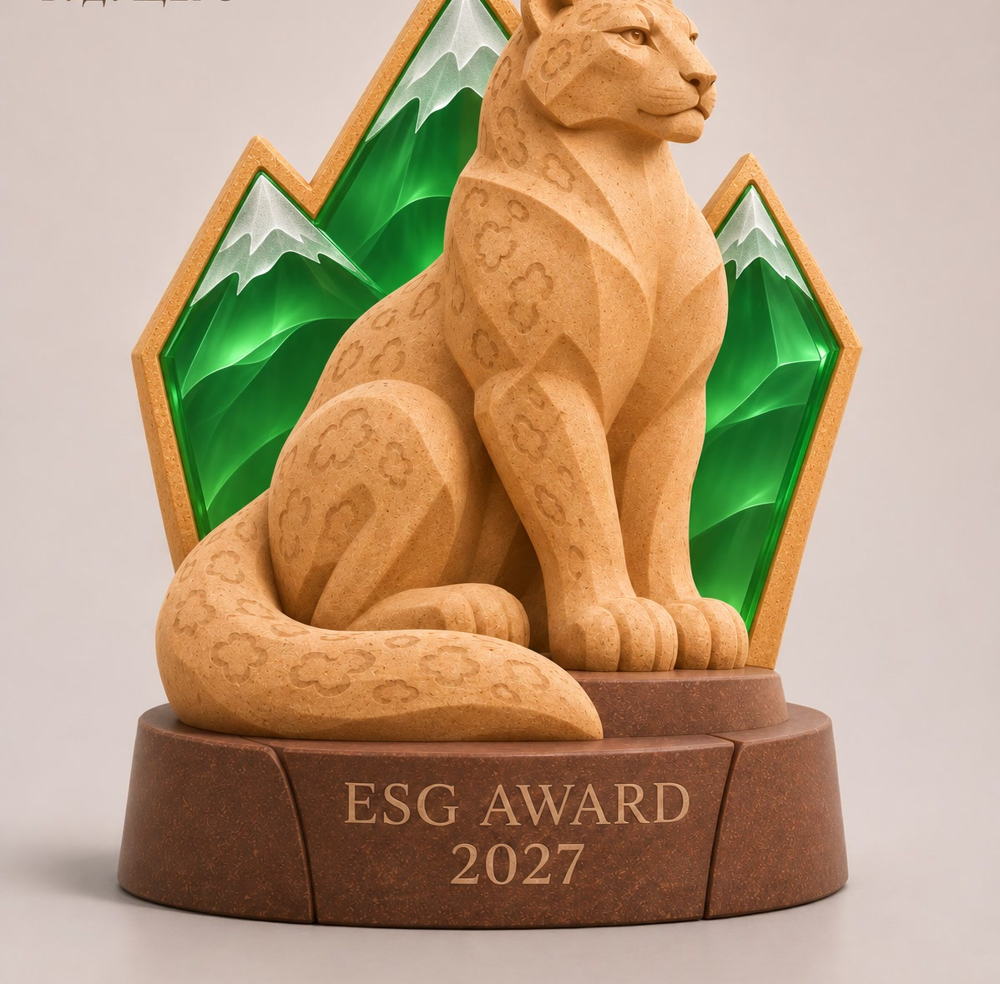
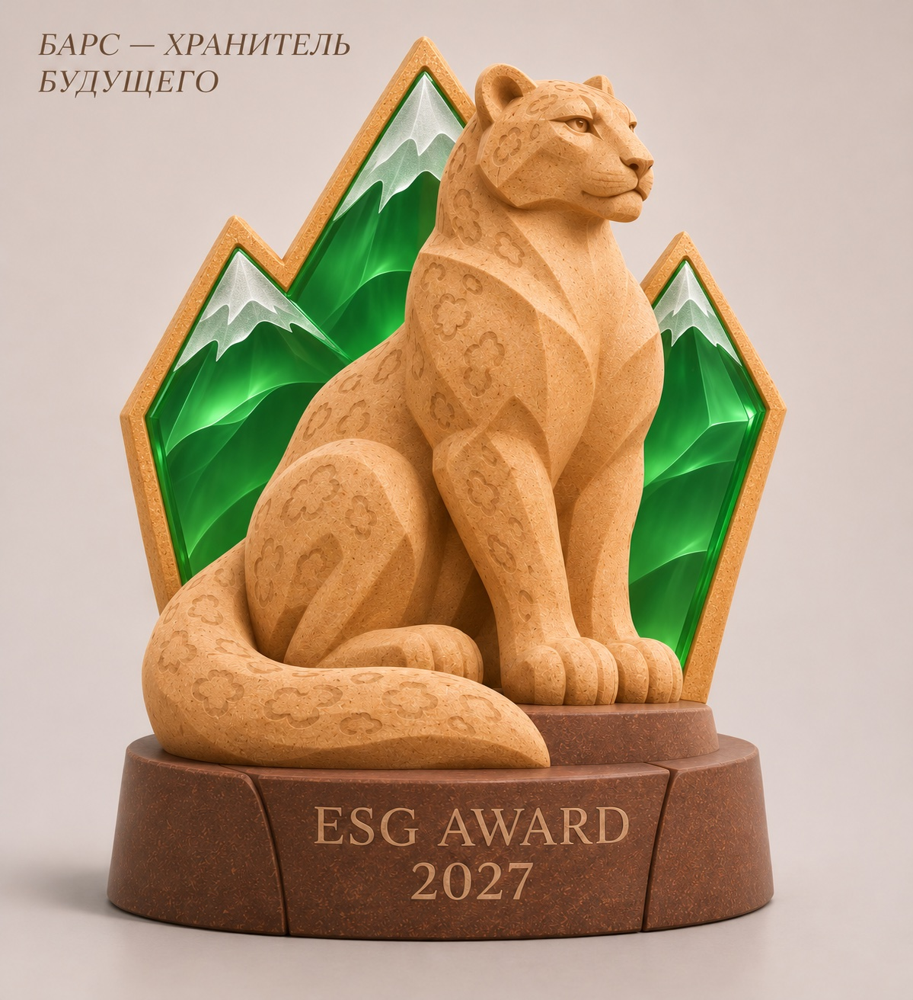

Environment
От обязательств к измеримым результатам в энергетике, климате и зелёном строительстве.

ESG Award
Статуэтка премии ESG Award: символ устойчивости, силы и ответственности за завтрашний день Казахстана.
Статуэтка
Барс стоит у изумрудных вершин — образ страны, которая хранит природу и строит конкурентное устойчивое будущее. Премия отмечает лидеров Environment, Social и Governance.

О форуме
Форум собирает регуляторов, инвесторов и компании, чтобы перевести ESG из отчётности в управленческие решения: зелёная энергетика, социальный капитал и прозрачное корпоративное управление.
От обязательств к измеримым результатам в энергетике, климате и зелёном строительстве.
Человеческий капитал, инклюзивность и социальные гарантии в период перехода.
Достоверность ESG-данных, прозрачность и конкурентоспособность компаний.
Программа
Стратегические рамки ESG-повестки Казахстана
Зелёный прогресс: от обязательств к результатам
Социальный капитал и инклюзивность: как измерять эффект
ESG-управление: от комплаенса к конкурентному преимуществу
Спикеры
Участие
Участие бесплатное. На площадке — синхронный перевод и цифровые материалы форума. Это демонстрационная форма: заявки сохраняются только локально в браузере.
МФЦА · Мангилик Ел 55/19, блок C3.4 · Астана